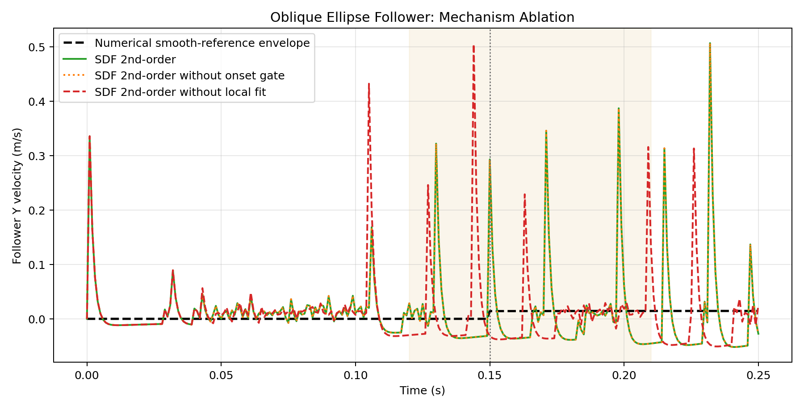

This stronger oblique benchmark replaces the circular roller with a horizontally elongated smooth ellipse. The wider contact footprint makes patch-level local fit materially affect the onset trajectory. Under this geometry, removing local fit measurably increases the onset-window peak error, while the current onset gate still mainly changes internal candidate rejection statistics rather than the final trajectory.
| Method | Runtime (s) | Vel RMSE (m/s) | Vel Max Abs (m/s) | Onset-window Vel RMSE (m/s) | Onset-window Vel Max Abs (m/s) | Detected motion onset (s) | Max fit attempted | Max fit applied | Max positive-gap reject |
|---|---|---|---|---|---|---|---|---|---|
| SDF 2nd-order | 21.420 | 0.073144 | 0.492102 | 0.082190 | 0.372454 | 0.001 | 3 | 3 | 5 |
| SDF 2nd-order without onset gate | 21.838 | 0.073144 | 0.492102 | 0.082190 | 0.372454 | 0.001 | 8 | 5 | 0 |
| SDF 2nd-order without local fit | 21.675 | 0.070089 | 0.504367 | 0.082630 | 0.504367 | 0.001 | 0 | 0 | 0 |

[SDF] Step 0 active contacts: 1 queried=12000 after_cap=1 fit_attempted=3 fit_applied=3 fit_reject=5[SDF] Step 0 active contacts: 1 queried=12000 after_cap=1 fit_attempted=8 fit_applied=5 fit_reject=0none